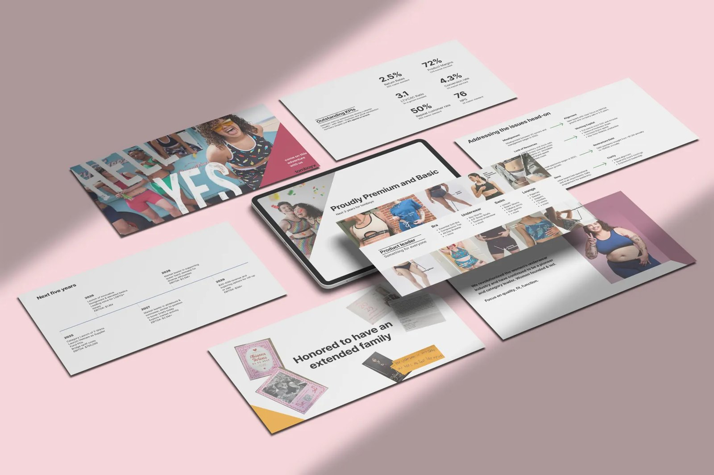
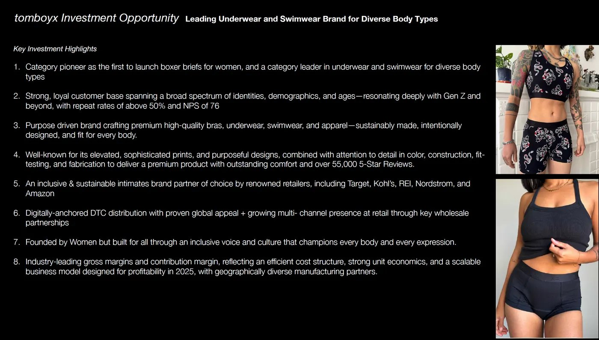
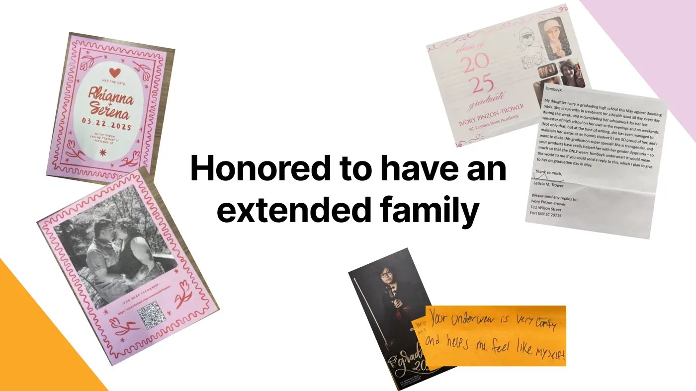
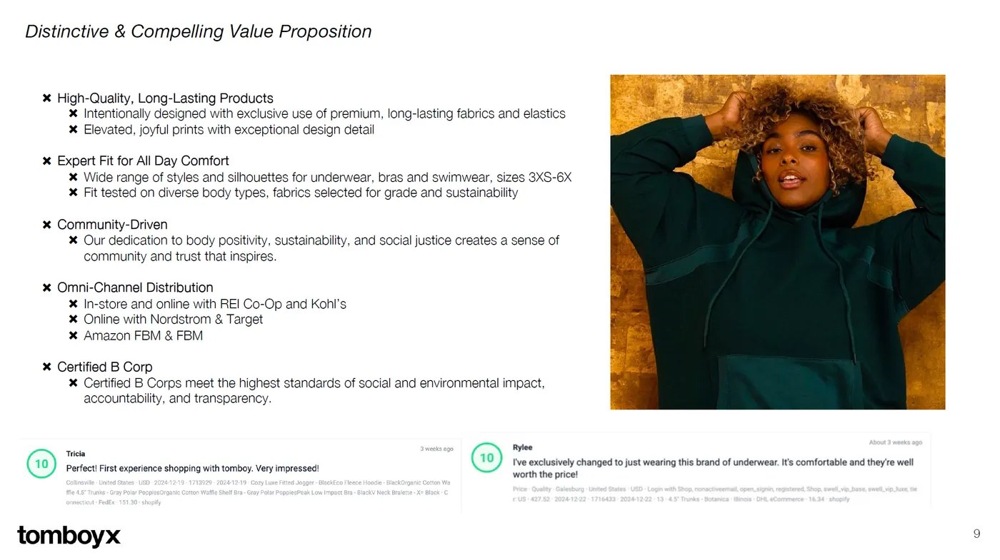
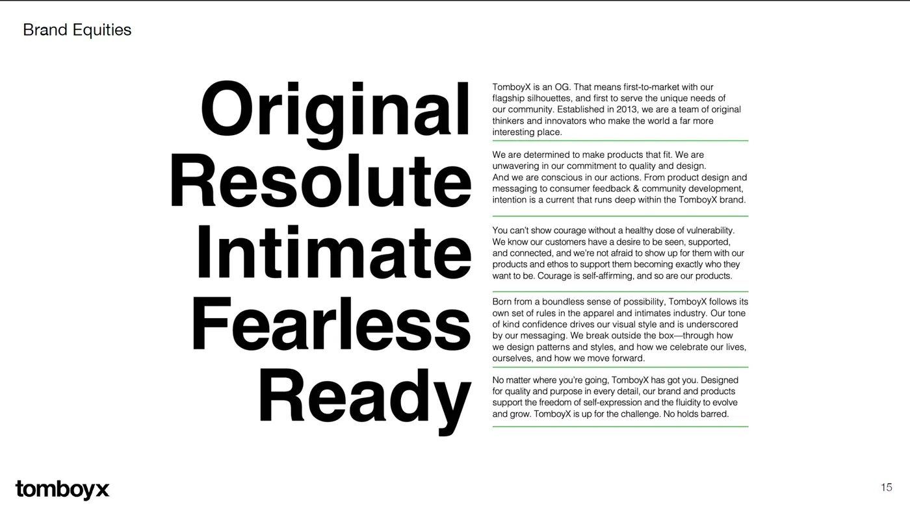
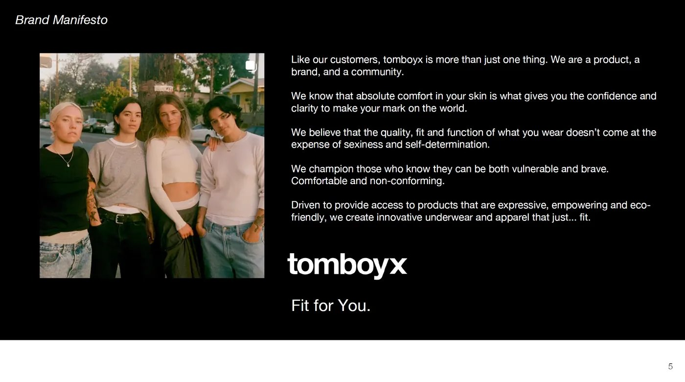
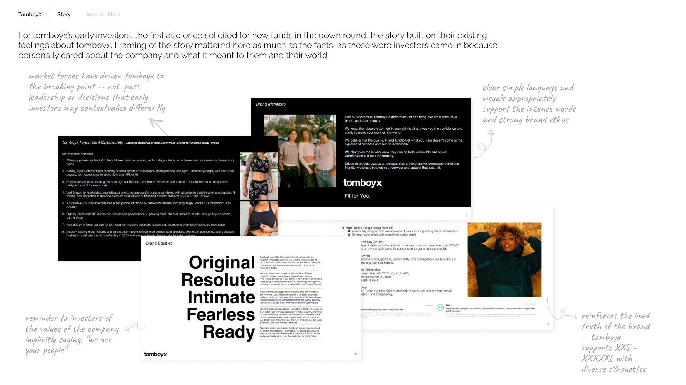
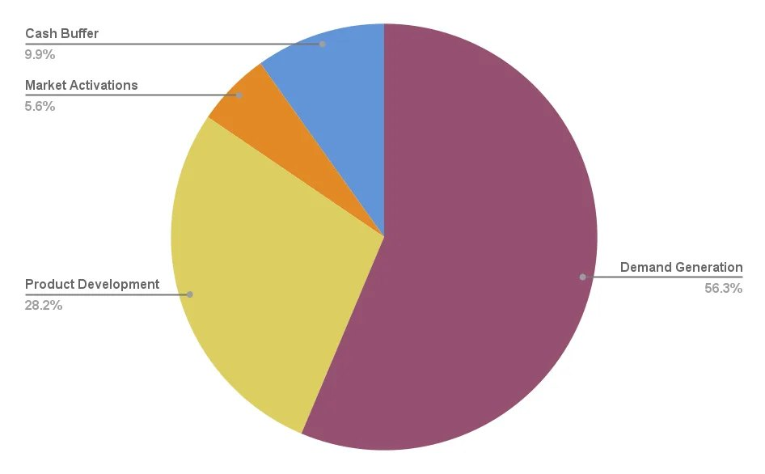

TomboyX investor storytelling, 20 questions
One company, one set of facts, one hard stretch behind it.
Four kinds of investor, each in the room for a different reason.
So four decks, and not one fact changes between them.
We find what each room came for, and put that part of the truth first.
“Framing of the story mattered here as much as the facts” the work deck, on the early investors


A down round reads like a verdict.
So the price is not hidden, and not dressed up.
It is put beside everything that did not go down: the customers, the numbers, the people who keep coming back.
We find what held its value, and build the ask on that.
“Beloved underwear company in need of a refreshed story to raise a re-capitalization in a down round.” the work deck

They were asked first, and they had the most to be sore about.
The story did not open with a pitch. It opened with why they came in at all.
And it named what broke without handing anyone the blame.
We start from what someone already feels, not from what we need them to do.
“market forces have driven tomboyx to the breaking point -- not past leadership or decisions that early investors may contextualize differently” a note on the early investors' deck


Leave them out, and the first question in the room is about them.
Lead with them, and nothing after is heard.
So the past gets the room it needs and no more, and the rest goes to who is running it now.
We decide how much of the past a story has to carry.
“layout and minimal focus on the past draws attention to the team, versus individual players” a note on the syndicates' deck

The same numbers are in every deck.
What moves is which one comes first, what sits beside it, and what it is called.
Nothing is added. Nothing is bent.
We keep the facts fixed and move everything else.
“language captures the exceptional metrics while keeping warmth at the forefront” a note on the syndicates' deck

Some investors decide with a spreadsheet. Some decide when they recognise themselves.
For them the pictures come first, chosen with care about who is looking.
The numbers follow, as proof of a feeling they already have.
We choose what is seen first for the person doing the seeing.
“Imagery nods to the female gaze in a deliberate repudiation of male gaze focused marketing.” the work deck, on the values-driven investors

A return rate means nothing if you have never sold underwear.
So every number sits next to the one it beats.
The investor does the sum themselves, and believes it more for that.
We put every number beside the thing that makes it readable.
“highlighting strong metrics in a way accessible for investors unfamiliar with underwear sector” a note on the angels' deck

A deck sent to a syndicate is passed on to people you will never meet.
Nobody is there to explain a slide.
So the colour, the size of a picture and the words on the page have to do the talking.
We design for the reader the deck reaches after you have left.
“Colors, language, size and style of imagery all contribute to the emotional resonance investors find with the deck.” the work deck, on the syndicates

These investors came looking for a return and for their people.
A deck usually answers the first and leaves the second to chance.
This one answers both, in that order of feeling: who we are, then what it is worth.
We say who a company is for, so the right people can tell it is them.
“care about the market opportunity but also want to understand they are with "their" people” the work deck, on the values-driven investors

Customers send this company invitations to their weddings.
That is usually a warm story for the last slide.
Here it is evidence, and it goes where the evidence goes.
We treat affection as data, and show it like data.
“showcasing some of the recent wedding and graduation invites the company has received from fans” a note on the syndicates' deck


Most pitches end at a screening, read by someone who will not make the decision.
That reader needs one thing they can carry upstairs.
So the deck is built around what is exceptional, and nothing ordinary is allowed to dilute it.
We write for the person who has to repeat it to someone else.
“a focus on the exceptional elements that make tomboyx special” the work deck, on the syndicates


An investor deck has a voice everyone expects.
This company has never sounded like that.
So the deck keeps the company's own strong words, and the design makes room for them.
We keep a company's voice in the place it is most tempting to drop it.
“clear simple language and visuals appropriately support the intense words and strong brand ethos” a note on the early investors' deck


Some investors want every number, and have run companies themselves.
A wall of metrics would be honest and unreadable.
So the data is walked through one question at a time, in the order they would ask.
We order the detail by the questions it answers.
“guiding investors through typical questions with a mix of data and narrative” a note on the angels' deck

The case rests on a change in who buys, and why.
A claim like that is easy to wave away.
So it is counted: who is changing, how fast, and what they buy when they do.
We turn a belief about the future into something you can check.
“quantify market growth and the outcomes of LGBTQ consumer shifts” a note on the angels' deck

The first investors did not need convincing. They needed reminding.
The deck does not explain the company to them.
It says, without saying it: we are your people.
We work out what someone already knows, and do not tell them again.
“reminder to investors of the values of the company implicitly saying, "we are your people"” a note on the early investors' deck


Any brand can say it is for every body.
This one sells XXS to XXXXXL.
So the claim is never left on its own. The size range is the sentence.
We find the fact that makes a value true, and show that.
“reinforces the lived truth of the brand -- tomboyx supports XXS - XXXXXL with diverse silhouettes” a note on the early investors' deck

Very little venture money goes to founders like these.
That could be the excuse. The deck makes it the reason.
If the usual money is not coming, the people who do come are the story.
We turn what a company is missing into who it belongs to.
“language calls to the investors' values with a framing around the lack of traditional VC funding for women and queer founders” a note on the values-driven investors' deck

A company in a down round looks like yesterday.
The deck shows who is buying now, and how young they are.
The one shrinking is the old leader. This is the one the next generation picks.
We show who a company is growing toward, not where it has been.
“highlights the diversity of tomboyx--appeals to minority groups across generations” a note on the values-driven investors' deck

Four kinds of investor cannot all be asked at once.
The first ask went to the ones who already had feelings about the company.
What they did is what the next room got to see.
We plan the order of the rooms as carefully as the story in each.
“the first audience solicited for new funds in the down round” the work deck, on the early investors


A story about a raise is only as good as the raise.
The test was plain: does it get past the screening, and in front of the person who decides.
It did.
We judge a story by what happens after it is told.
“dramatically increased the emotional connection with the investors” the work deck, on the syndicates

